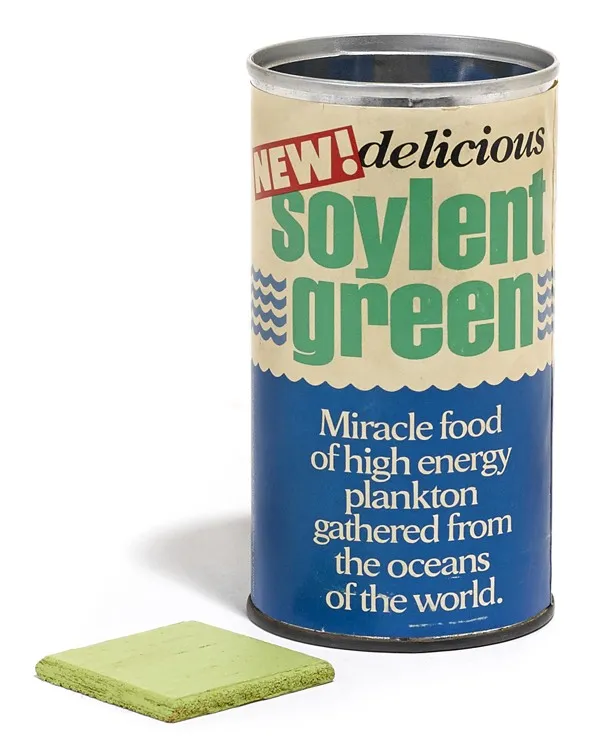

Soylent Green
Back to Odin Recipes

Description
Feeling like getting good quality nutritious food is getting harder and harder?
Make Room, Make Room! for this new delicacy at your dinner table.
No matter how tough things get, you will always have something to eat!
Ingredients
Serving size: 6 persons
- 1 teacup water
- 1 tablespoon salt
- ground black pepper
- 500g fresh seaweeds (or any other green plant thing)
- 2Kg quality people meat
Utensils
- blender
- meat press
- meat grinder (optional)
- frying pan
Steps
- Find yourself a good, high quality human, and get 2Kg of his meat.
(if you get more, save the rest for later, you can always make a fine stew with it).
- If you have a meat grinder, mince the meat; If not, dice in very small cubes.
- Add the meat and the remaining ingredients to the blender.
- Season with the pepper to your taste.
- Blend everything until you get a beautiful, uniform, green pulp (if its not green enough, add more seaweed).
- With a soup spoon, take a piece of the mixture and place it on your meat press.
- Press the mixture until its nice and compact.
You can then shape how you wish, but for historical consistency we suggest a square shape.
- Let the squares set for a couple of minutes in a piece of kitchen paper, to absorb excess water.
- In a medium heated frying pan, put your squares just long enough just so they get a beautiful vibrant green colour.
- Serve while its hot!